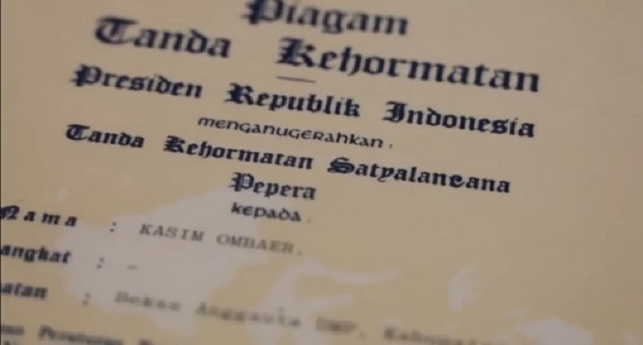

.jpg)
Konten Utama
Sejarah Desa Namatota
Desa Namatota aslinya bernama Ufiyai adalah pusat Kerajaan Namatota yang disebut dalam buku negara-kertagama dari kerajaan Majapahit (1365) dengan sebutan Kerajaan Koiway, ini bermakna bahwa telah adanya kontak antara penduduk asli selatan papua dengan penduduk di wilayah nusantara lainnya. Kerajaan Namatota atau Kerajaan Koiwai berada di Semenanjung Bomberai memegang peranan penting pada masa lampau sebagai bagian dari jalur perdagangan dengan komoditas-komoditas berasal dari pedalaman Tanah Papua seperti pala, bulu burung cendrawasih, kayu masohi, teripang atau sisik penyu. Hingga kini di Kampung Namatota masih mengenal 2 sistem pemerintahan Pada masa jelang Perebutan Irian Barat, Raja Namatota pernah mendampingi Presiden Indonesia Ir. Soekarno menghadiri pertemuan 16 September 1961 di Washington DC. Raja Namatota diberi penghargaan atas Kiprah yang turut memastikan perjuangan Kembalinya Irian Barat ke Pangkuan RI. Dasar Pembentukan Desa Namatota Undang-Undang Nomor 12 tahun1969 Undang-undang no 26 thn 2002 Keputusan Gubernur Kepala Daerah Tingkat I Irian Jaya No. 193/GIJ/1973 tentang petunjuk pelaksanaan pembentukan kecamatan di daerah tingkat l Irian Jaya termasuk di daerah tingkat ll Fakfak sebanyak 8 kecamatan. Perda Kabupaten Kaimana Nomor 25 Tahun 2009 tentang Organisasi dan Tata Kerja Distrik dan Kelurahan Kabupaten Kaimana (Lembaran Daerah Kabupaten Kaimana Tahun 2007 Nomor 47); Perda Kabupaten Kaimana Nomor 7 Tahun 2007 Tentang Penghapusan Pembentukan Dan Perubahan Status Kampung Dan Kelurahan Di Wilayah Kabupaten Kaimana.

> Kampung Namatota dihuni mayoritas oleh Suku Koiwai, dikenal sebagai masyarakat yang menghuni daerah pesisir dan pulau-pulau kecil di Kaimana. Menurut sejarah, terdapat kerajaan di Papua pada Semenanjung Onin dan Semenanjung Bomberai. Kerajaan Namatota atau juga dikenal Kerajaan Koiwai berada di Semenanjung Bomberai ini dan memegang peranan penting pada masa lalu sebagai bagian dari jalur perdagangan dengan komoditas-komoditas berasal dari pedalaman Tanah Papua seperti pala, bulu burung cendrawasih, kayu masohi, teripang atau sisik penyu. Pada masa kini sistem kerajaan Namatota tetap bertahan dengan keberadaan raja masih diakui oleh Masyarakat Kowai. Tidak banyak situs-situs peninggalan tersisa, namun masih terdapat rumah raja yang biasa disebut sebagai rumah adat, tempat untuk menyimpan pernak-pernik atau aksesoris raja-raja Namatota. Selain itu satu kompleks makam kuno yang terintegrasi dengan masjid. Pada pulau kecil di dekat pemukiman terdapat kawasan hutan keramat, tempat gua berisi tengkorak berada. Peninggalan lebih tua berasal dari zaman prasejarah jauh sebelum Kerajaan Namatota ditemukan pada dinding-dinding cadas di seberang Selat Namatota dalam bentuk lukisan. Dalam membicarakan sejarah, ada beberapa norma dan kebiasaan yang berlaku di Kampung Namatota. Silsilah raja atau sejarah kerajaan Namatota hanya boleh diceritakan oleh raja Namatota dan cuma sampai enam keturunan kebelakang, tidak dapat menuturkan lebih dari itu. Norma tersebut dipegang teguh oleh masyarakat Kampung Namatota sehingga masyarakat tidak dapat menceritakan sejarah yang ada. Budaya lain yang menarik di Namatota ditemukan dalam hubungannya menjaga alam. Hal ini telihat masyarakat hingga saat ini masih menjaga dan menggunakan kearifan budaya berupa “Sistem Sasi” berupa dilakukan pelarangan untuk mengambil hasil dengan tujuan sebagai tabungan hingga batas waktu yang ditentukan, lalu dilakukan panen secara bersama-sama untuk keperluan tertentu misalnya kebutuhan untuk anak sekolah. Tradisi Sasi dilakukan terhadap jenis-jenis biota tertentu misalnya Lola, Teripang, Batu Laga sehingga tidak diambil dengan cara yang merusak dan berlebihan.
Kuliner
Menikmati kuliner khas Kampung Namatota
Salah satu kuliner lezat khas Kaimana Papua Barat adalah kerang Kima. Rasanya hampir mirip dengan sashimi. Kuliner lezat ini rasanya seperti sashimi Jepang. Kima adalah sejenis kerang-kerangan berukuran besar. Kerang ini biasanya menghuni perairan laut hangat. Kima mengandung protein tinggi. Kerang ini sudah ada sejak zaman purba dan menjadi sumber makanan sehat. Bahkan, daging Kima dipercaya mampu menambah kejantanan pria yang menyantapnya.
.jpg)